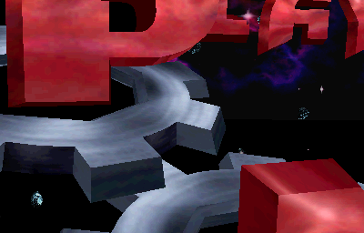
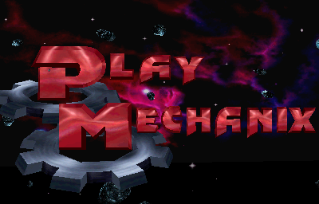

failed
unzip: error inflating invasion2.u3 from /run/media/stoned/schrott/Roms/mame/roms/invasnab.zip (-3) unzip: local file header for invasion2.u4 in /run/media/stoned/schrott/Roms/mame/roms/invasnab.zip has incorrect signature 74d8103e unzip: local file header for invasion2.u5 in /run/media/stoned/schrott/Roms/mame/roms/invasnab.zip has incorrect signature 8c0920e8 unzip: local file header for invasnab4/invasion4.u10 in /run/media/stoned/schrott/Roms/mame/roms/invasnab.zip has incorrect signature 93b809ac unzip: local file header for invasion4.u12 in /run/media/stoned/schrott/Roms/mame/roms/invasnab.zip has incorrect signature 3df107d1 unzip: local file header for invasion4.u13 in /run/media/stoned/schrott/Roms/mame/roms/invasnab.zip has incorrect signature 8f2cb209 unzip: local file header for invasion4.u14 in /run/media/stoned/schrott/Roms/mame/roms/invasnab.zip has incorrect signature 81e9f07b unzip: local file header for invasion4.u15 in /run/media/stoned/schrott/Roms/mame/roms/invasnab.zip has incorrect signature df5a6834 unzip: local file header for invasion4.u16 in /run/media/stoned/schrott/Roms/mame/roms/invasnab.zip has incorrect signature 8b167671 unzip: local file header for invasion4.u17 in /run/media/stoned/schrott/Roms/mame/roms/invasnab.zip has incorrect signature afa4381f unzip: local file header for invasion4.u18 in /run/media/stoned/schrott/Roms/mame/roms/invasnab.zip has incorrect signature ce0d7f27 unzip: local file header for invasion4.u19 in /run/media/stoned/schrott/Roms/mame/roms/invasnab.zip has incorrect signature e3d96dec invasion2.u3 NOT FOUND (tried in invasnab4 invasnab) invasion2.u4 NOT FOUND (tried in invasnab4 invasnab) invasion2.u5 NOT FOUND (tried in invasnab4 invasnab) invasion4.u10 NOT FOUND (tried in invasnab4 invasnab) invasion4.u12 NOT FOUND (tried in invasnab4 invasnab) invasion4.u13 NOT FOUND (tried in invasnab4 invasnab) invasion4.u14 NOT FOUND (tried in invasnab4 invasnab) invasion4.u15 NOT FOUND (tried in invasnab4 invasnab) invasion4.u16 NOT FOUND (tried in invasnab4 invasnab) invasion4.u17 NOT FOUND (tried in invasnab4 invasnab) invasion4.u18 NOT FOUND (tried in invasnab4 invasnab) invasion4.u19 NOT FOUND (tried in invasnab4 invasnab) c32boot.bin ROM NEEDS REDUMP Fatal error: Required files are missing, the machine cannot be run.


{kind=link}
{kind=link}